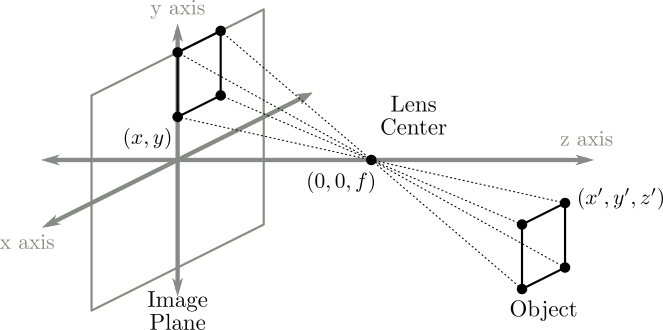
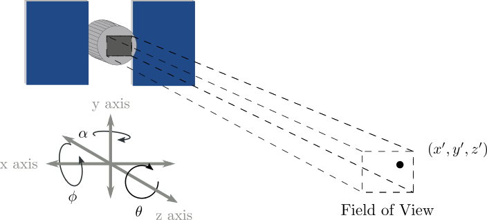

Thesis
Introduction
Image registration is the process of transforming multiple snapshots so that subjects or features common to two or more snapshots are aligned. The images may be stitched into a composite image to get a wider field of view, higher resolution, reduced noise, or may be simply be aligned as in the case of video stabilization. Depending on the problem, registration algorithms often need to contend with changes in the scene being imaged (due to elapsed time between snapshots), perspective changes (changes in camera position), and illumination changes (from different imaging equipment). 3
Motion estimation, a related field, is the process of identifying motion captured in a series of images (usually frames of a video). This motion may be due to motion of the camera which causes the whole scene to appear to move (apparent motion), or individual objects moving independently within the frame. In motion fields, a velocity vector is associated with each pixel in a particular region of the image (local motion estimation) or the image as a whole (global motion estimation). These motion vectors usually represent 2D motion across the image, but may also be 3D to capture movement in 3D space. When a motion field for individual pixels has been computed it is common to group motion vectors that belong to the same moving object, a process known as motion segmentation. 1
Registration is an important step in the image processing pipeline for countless fields. For example, in remote sensing applications registration is used in change detection, image mosaicing, and super resolution. In medical imaging applications, registration is used for overlaying patient images from multiple channels, such as CT and MRI, which the caregiver can cross-reference for diagnoses, and to compare patient data to physiological atlases.
In the next sections, I mathematically describe the problem of image registration, provide a categorization framework for registration methods, and explain the motivating problem of this thesis.
Registration Problem Model
Let and be two images captured of a scene. These are often called the reference and sensed images. In image registration, we want to find a mapping from regions in the sensed image to regions in the reference image. More formally, we want to find such that
where is a coordinate vector in the image overlap region , is some unknown coordinate transform, and is an unknown intensity mapping function. is often assumed to be unitary, but can be a very complicated function in multimodal applications like medical imaging where and are captured from different instruments. For the rest of this paper, I assume and are 2D vectors containing image data.
Categorizing Registration Methods
While there is a wide variety of approaches to the problem of image registration, many algorithms can be broken down into 4 steps which aids in their classification. 2.
- Feature detection - Distinct features (points, edges, closed regions, intersections, corners, etc.) are detected in both images. These features may be represented by coordinates (intersections, corners, etc.), coordinate pairs (edges) or a more complex parameterization. This step is omitted in non-feature based registration methods.
- Feature Matching - Correspondence is established between features detected in the images. Feature similarity measures or feature positions within the images may be used to do this. This step is omitted in non-feature-based registration methods.
- Transform model estimation - In feature-based methods, the parameters of the coordinate mapping function are computed using the previously matched features. In non-feature-based methods, model parameters can be estimated from image statistics, iterative cost minimization, or image spectra, to name a few. This step is where most variability between registration methods lies.
- Image transformation - The sensed image is transformed using the estimated parameters and optionally fused with the reference image. Interpolation may be necessary if the mapping function contains non-integer coordinates.
The registration algorithms reviewed later in this manuscript perform a single pass of these steps to arrive at the registered result, but some other algorithms, especially those used in the process of super-resolution, repeat steps through several iterations and only stop when some criterion is met. 5
A Comment on Notation
This document contains many types of variables which can represent transform parameters, 1D vectors of parameters and 2D images. I try to follow these guidelines for easier reading:
- bold for variables which represent 1D vectors. For example is a coordinate vector representing position within an image
- superscript for ground truth parameters of coordinate transform . For example and are parameters controlling scaling and rotation
- hat for algorithmic estimates of ground truth parameters. For example represents the estimates for found by a particular algorithm
Types of Image Transforms
The coordinate transform is a fundamental component of any registration algorithm. Most registration algorithms describe a specific class of coordinate transforms which can be completely described by a handful of parameters that are searched over during the transform model estimation step . In this section, I describe a few of the most common classes of coordinate transforms, their parameters, and give some examples of where they are used.
Translation
The simplest and most common type of coordinate transform is translation
where is a length 2 vector whose elements correspond to the shift in each dimension. Some of the oldest registration methods operate over this class of transforms.
Rotation
Another type of registration method is rotation, in which the sensed image is rotated about some point.
where is known as a rotation matrix. has orthogonal columns and can be entirely parameterized by , the rotation angle.
These two transform classes might be used together when stitching images from a digital microscope to get a larger field of view where the specimen slide is allowed to translate or rotate in a fixed plane.
Scaling
A third type of coordinate transform is scaling, where the sensed image origin and orientation remain fixed, but coordinates are scaled.
where is a scaling matrix parameterized by the scaling factor .
These three coordinate transforms taken together are often called an similarity transform. Similarity transforms are rigid, meaning they do not change the shape of features in the reference image, parallel lines remain parallel, and angles and lengths are preserved. For example, a triangle in the sensed image will map to a similar triangle in the reference image.
Similarity transforms can be written generally as
Some authors allow for the first or second column of to be negated which corresponds to a geometric reflection, though this is less useful in registration settings.
Affine
A generalization of the similarity transform is the affine transform, where the rotation matrix is replaced by a matrix with no orthogonality constraint and the scaling factor is incorporated.
This transform can also account geometric skew, where angles and lengths are no longer preserved but parallel lines remain parallel.
Perspective


Elastic
When the type of transform is unknown or more complicated, elastic transforms can be used to correct for misalignment. This can arise in situations where a 3D scene is projected through an optical system onto a 2D plane, but unlike perspective projection, there are large depth variations which occlude parts of the scene. Objects which appear in one image may be completely obscured in the other, which is increasingly difficult to account for as the number of occlusions increases. In these settings, a more general coordinate transform which can map more arbitrary distortions is preferred.
Elastic methods can either operate over the image as a whole (global), or apply different transforms to regions of the image separately (local).
An example of a global elastic method is the bivariate polynomial transform, in which the x and y coordinates are fed through a pair of polynomial functions.
where are the original coordinates, the transformed coordinates, and and are constant parameters controlling the transform.
Local methods are more general than global methods and can handle distortions that global methods cannot, such as deformable objects, complex 3D surfaces, and object motion within the scene. While these methods are more powerful, there is a tradeoff with computational complexity as the number of parameters increases. An example of a local elastic coordinate transform is piecewise spline interpolation.
Below is a diagram which illustrates examples of some of these transform classes.

VISORS Mission
The VIrtual Super-resolution Optics with Reconfigurable Swarms (VISORS) mission, due to be launched by NASA in 2023, is a heliophysics CubeSat mission designed to study the Sun's corona at a finer scale than has been achieved in previous missions in order to shine light on the processes which drive heating in the corona.
VISORS consists of two 3U spacecraft known as the Optics Spacecraft (OSC) and Detector Spacecraft (DSC), which carry instrumentation for taking measurements in extreme ultraviolet (EUV) range. These two spacecraft will fly in formation 40 meters apart aligned along an axis pointed at the region of interest on the Sun during science mode. The OSC focuses incoming light using a novel diffractive element known as a photon sieve while simultaneously using its solar panels to block off-axis light from entering the DSC. The DSC will be positioned on the focal plane corresponding to He II emission line at 30.4nm. In particular, the OSC uses a diffractive optical element known as a photon sieve, which can outperform equivalent reflective optics due to tighter manufacturing tolerances. 4
VISORS is what is known as a virtual telescope. In contrast to other non-virtual space telescopes such as Hubble (visible light) and the Solar Dynamic Observatory (EUV), the focusing optics and detector fly on separate spacecraft which allows the design to support large focal lengths without significantly increasing spacecraft volume and to reconfigure the wavelength after launch by adjusting spacecraft separation.
In addition to its contributions to heliophysics, VISORS will serve as a technology demonstration of diffractive, distributed telescopy and precision satellite formation flying.

Paper Outline
Chapter 2 introduces classes of image registration and describes popular registration methods from each class. Chapter 3 introduces the idea of subpixel registration, its uses, and gives a summary of a fast subpixel registration algorithm which is used to derive a new fast multi-frame subpixel algorithm, described in chapter 4. Chapter 5 contains numerical registration experiments under various settings, a description of the pipeline used to generate the test images, and some tests involving other classes of images unrelated to the VISORS project.
Review of Registration Methods
Subpixel Registration
Multiframe Subpixel Registration
Numerical Experiments
Conclusion
References
- A Survey of Mutual Information Based Registration - Pluim, Maintz, Viergever 2003
-
Motion Estimation - Konrad ↩
-
Image registration methods: a survey - Zitova, Flusser 2003 ↩
-
F. S. Oktem, F. Kamalabadi, and J. M. Davila, "High-resolution computational spectral imaging with photon sieves," in 2014 IEEE International Conference on Image Processing (ICIP). IEEE, 2014, pp. 5122-5126. ↩
-
Fast and Robust Multiframe Super Resolution - 2004, 2343 Citations ↩
-
Feature-Based Deformable Image Registration with RANSAC Based Search Correspondence - Colleu, Shen, Matuszewski, Shark, Cariou ↩
-
An Automatic Satellite Image Registration Technique Based on Harris Corner Detection and Random Sample Consensus (RANSAC) Outlier Rejection Model - Misra, Moorthi, Dhar, Ramakrishnan ↩